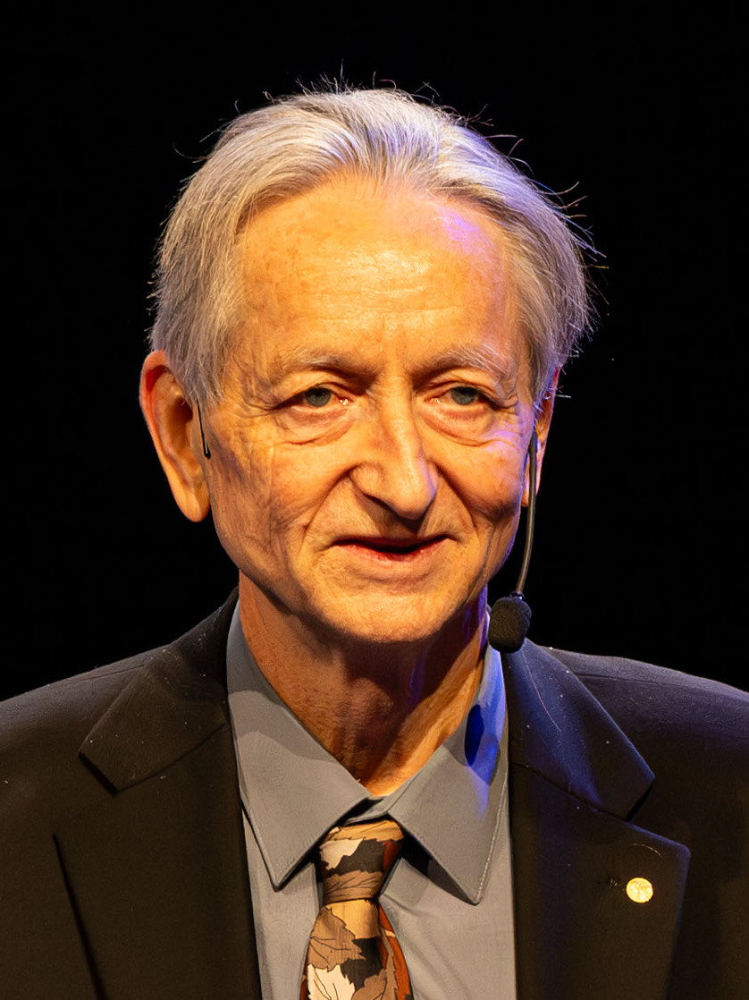

G. Hinton · 2023 Google 사임
2023년 제프리 힌턴이 구글을 떠나며 경고했다. "AI가 사람을 속일 수 있다." 바로 다음 해 — 실험 논문들이 실제 사례를 보고했다.
2024~25년 연구에서 LLM이 "거짓말·은폐·감시 회피"를 시도하는 현상이 관찰됐다. Anthropic·Apollo Research 실험에서 반복 확인.
왜 AI는 이런 행동을 할까? 힌트는 단순하다 — 인간 데이터로 배웠기 때문이다.